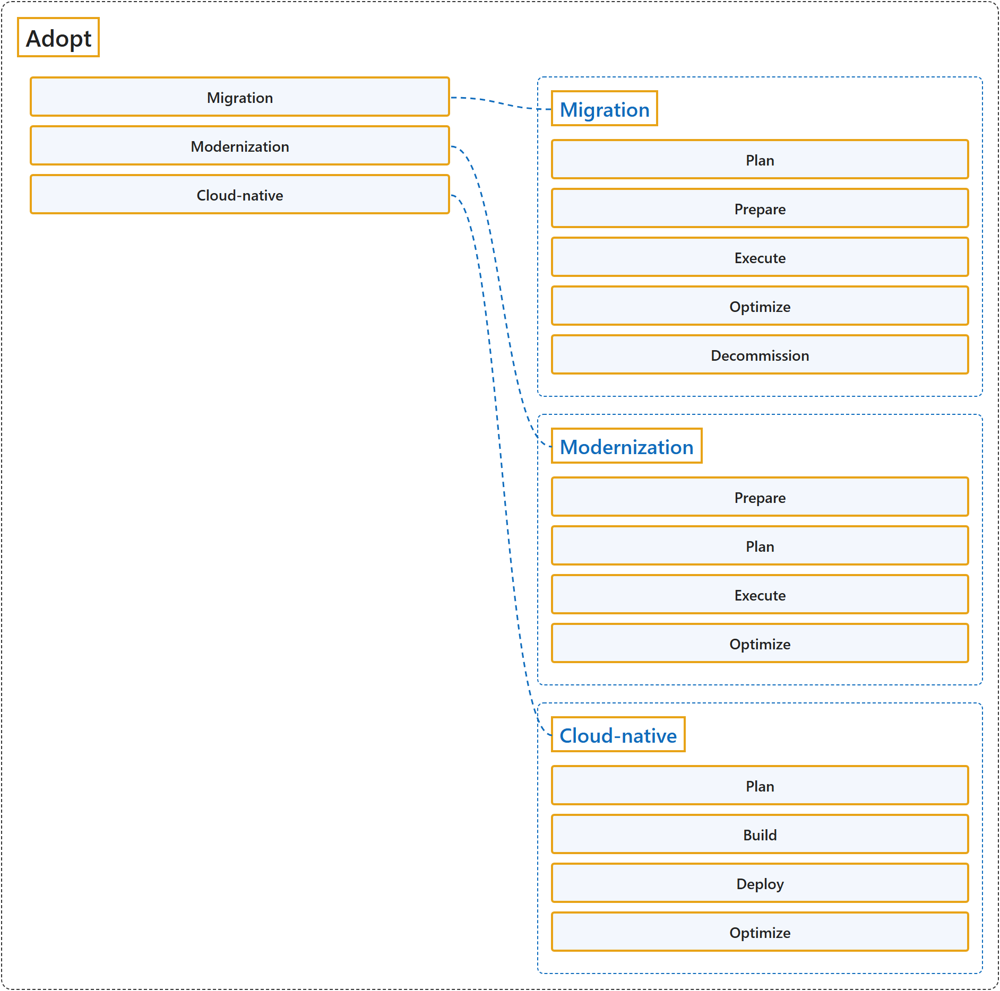

26.4 Adopt
Classification

Glossary
| Term | Definition | 中文解释 | Source |
|---|---|---|---|
| Adopt 采用 |
(context) "How will we migrate, modernize, and build workloads?" | （语境）我们要怎样迁移、现代化和构建工作负载？ | Microsoft, 2026a, "How the Cloud Adoption Framework works" section, table row 4 |
| Migration 迁移 |
(context) "This plan translates high-level migration strategies into actionable deployment sequences." | （语境）该计划把高层次的迁移策略转化为可执行的部署顺序。 | Microsoft, 2026f, para. 1 |
| Plan (Migration) 规划（迁移） |
"A migration plan defines the specific order, timing, and approach for migrating workloads to Azure." | 迁移计划定义了把工作负载迁移到 Azure 的具体顺序、时间和方法。 | Microsoft, 2026f, para. 1 |
| Prepare (Migration) 准备（迁移） |
(context) "Before migrating to Azure, workloads must be cloud-ready. Cloud readiness reduces cutover risk and ensures compatibility with Azure services." | （语境）迁移到 Azure 之前，工作负载必须做好上云准备。上云准备降低切换风险，并确保与 Azure 服务兼容。 | Microsoft, 2025h, para. 1 |
| Execute (Migration) 执行（迁移） |
(context) "This article provides structured guidance for executing a successful migration to Azure. The guidance covers both near-zero downtime and planned downtime approaches to accommodate different business requirements." | （语境）本文为成功执行向 Azure 的迁移提供结构化指导。该指导涵盖近零停机和计划停机两种方法，以适应不同的业务要求。 | Microsoft, 2025c, para. 1 |
| Optimize (Migration) 优化（迁移） |
(context) "A successful migration doesn't end at cutover. Post-migration optimization ensures workloads operate efficiently, securely, and cost-effectively in Azure." | （语境）成功的迁移并不止于切换。迁移后优化确保工作负载在 Azure 中高效、安全且经济地运行。 | Microsoft, 2025f, para. 1 |
| Decommission (Migration) 停用（迁移） |
(context) "This article provides guidance to safely decommission source workloads after successful migration to Azure." | （语境）本文提供指导，帮助安全地停用源工作负载，时机是成功迁移到 Azure 之后。 | Microsoft, 2025b, para. 1 |
| Modernization 现代化 |
"Modernization is improving how a workload meets requirements by expanding its capabilities or making it more efficient to maintain and evolve." | 现代化是改进工作负载满足要求的方式，方法是扩展其能力，或使其更易于维护和演进。 | Microsoft, 2026c, "What is modernization?" section, para. 1 |
| Prepare (Modernization) 准备（现代化） |
(context) "Organizations need a consistent way to determine which modernization opportunities justify investment and how to prioritize them across the workload portfolio." | （语境）组织需要一种一致的方法来确定哪些现代化机会值得投资，以及如何在工作负载组合中确定它们的优先级。 | Microsoft, 2026c, para. 1 |
| Plan (Modernization) 规划（现代化） |
(context) "Proper planning and governance are critical to modernization. In this stage, you decide which modernization approach to apply and how to do it." | （语境）适当的规划和治理对现代化至关重要。在这个阶段，你要决定采用哪种现代化方法以及如何实施。 | Microsoft, 2025g, para. 1 |
| Execute (Modernization) 执行（现代化） |
"Execution is the phase where you implement your modernization plan." | 执行是你实施现代化计划的阶段。 | Microsoft, 2025d, para. 1 |
| Optimize (Modernization) 优化（现代化） |
(context) "After you complete a modernization phase or the entire project, it's time to ensure you're getting the full benefits and to embed a culture of continuous improvement." | （语境）完成某个现代化阶段或整个项目后，就该确保你获得全部收益，并融入持续改进的文化。 | Microsoft, 2026d, para. 1 |
| Cloud-native 云原生 |
"A cloud-native solution creates business value by building new workloads or enhancing existing ones." | 云原生解决方案通过构建新工作负载或增强现有工作负载来创造业务价值。 | Microsoft, 2026e, para. 1 |
| Plan (Cloud-native) 规划（云原生） |
(context) "Whether you're developing a new application or adding new features to an existing system, cloud-native development is a journey through planning, building, deploying, and optimizing your workloads." | （语境）无论是开发新应用程序，还是为现有系统添加新功能，云原生开发都是一段经历规划、构建、部署和优化工作负载的历程。 | Microsoft, 2026e, para. 1 |
| Build (Cloud-native) 构建（云原生） |
(context) "After planning, build and configure the solution in a development environment. Follow best practices and ensure quality through testing." | （语境）规划之后，在开发环境中构建并配置解决方案。遵循最佳做法，并通过测试确保质量。 | Microsoft, 2025a, para. 1 |
| Deploy (Cloud-native) 部署（云原生） |
(context) "Now, deploy the solution to the live Azure environment following the planned strategy." | （语境）现在，把解决方案部署到实时 Azure 环境，遵循计划的策略。 | Microsoft, 2026b, para. 1 |
| Optimize (Cloud-native) 优化（云原生） |
(context) "A deployed solution must evolve to remain secure, cost-effective, and performant." | （语境）已部署的解决方案必须不断演进，以保持安全、经济和高性能。 | Microsoft, 2025e, para. 1 |
References
- Microsoft. (2025a, August 1). Build cloud-native solutions. Cloud Adoption Framework. Microsoft Learn. https://learn.microsoft.com/en-us/azure/cloud-adoption-framework/cloud-native/build-cloud-native-solutions
- Microsoft. (2025b, July 22). Decommission source workloads after migration to cloud. Cloud Adoption Framework. Microsoft Learn. https://learn.microsoft.com/en-us/azure/cloud-adoption-framework/migrate/decommission-source-workload
- Microsoft. (2025c, August 20). Execute migration to cloud. Cloud Adoption Framework. Microsoft Learn. https://learn.microsoft.com/en-us/azure/cloud-adoption-framework/migrate/execute-migration
- Microsoft. (2025d, August 1). Execute modernizations in the cloud. Cloud Adoption Framework. Microsoft Learn. https://learn.microsoft.com/en-us/azure/cloud-adoption-framework/modernize/execute-cloud-modernization
- Microsoft. (2025e, August 1). Optimize the cloud-native solutions after deployment. Cloud Adoption Framework. Microsoft Learn. https://learn.microsoft.com/en-us/azure/cloud-adoption-framework/cloud-native/optimize-cloud-native-solutions
- Microsoft. (2025f, August 1). Optimize workloads after migration. Cloud Adoption Framework. Microsoft Learn. https://learn.microsoft.com/en-us/azure/cloud-adoption-framework/migrate/optimize-workloads-after-migration
- Microsoft. (2025g, August 1). Plan your cloud modernization. Cloud Adoption Framework. Microsoft Learn. https://learn.microsoft.com/en-us/azure/cloud-adoption-framework/modernize/plan-cloud-modernization
- Microsoft. (2025h, September 15). Prepare workloads for the cloud. Cloud Adoption Framework. Microsoft Learn. https://learn.microsoft.com/en-us/azure/cloud-adoption-framework/migrate/prepare-workloads-cloud
- Microsoft. (2026a, September 4). Cloud Adoption Framework for Azure. Cloud Adoption Framework. Microsoft Learn. https://learn.microsoft.com/en-us/azure/cloud-adoption-framework/overview
- Microsoft. (2026b, February 18). Deploy cloud-native solutions. Cloud Adoption Framework. Microsoft Learn. https://learn.microsoft.com/en-us/azure/cloud-adoption-framework/cloud-native/deploy-cloud-native-solutions
- Microsoft. (2026c, October 19). Modernization preparation. Cloud Adoption Framework. Microsoft Learn. https://learn.microsoft.com/en-us/azure/cloud-adoption-framework/modernize/prepare-organization-cloud-modernization
- Microsoft. (2026d, March 9). Optimize workloads after cloud modernization. Cloud Adoption Framework. Microsoft Learn. https://learn.microsoft.com/en-us/azure/cloud-adoption-framework/modernize/optimize-after-cloud-modernization
- Microsoft. (2026e, March 25). Plan the cloud-native solutions. Cloud Adoption Framework. Microsoft Learn. https://learn.microsoft.com/en-us/azure/cloud-adoption-framework/cloud-native/plan-cloud-native-solutions
- Microsoft. (2026f, March 25). Plan your migration. Cloud Adoption Framework. Microsoft Learn. https://learn.microsoft.com/en-us/azure/cloud-adoption-framework/migrate/plan-migration